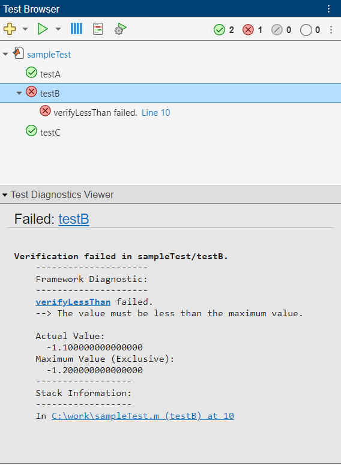
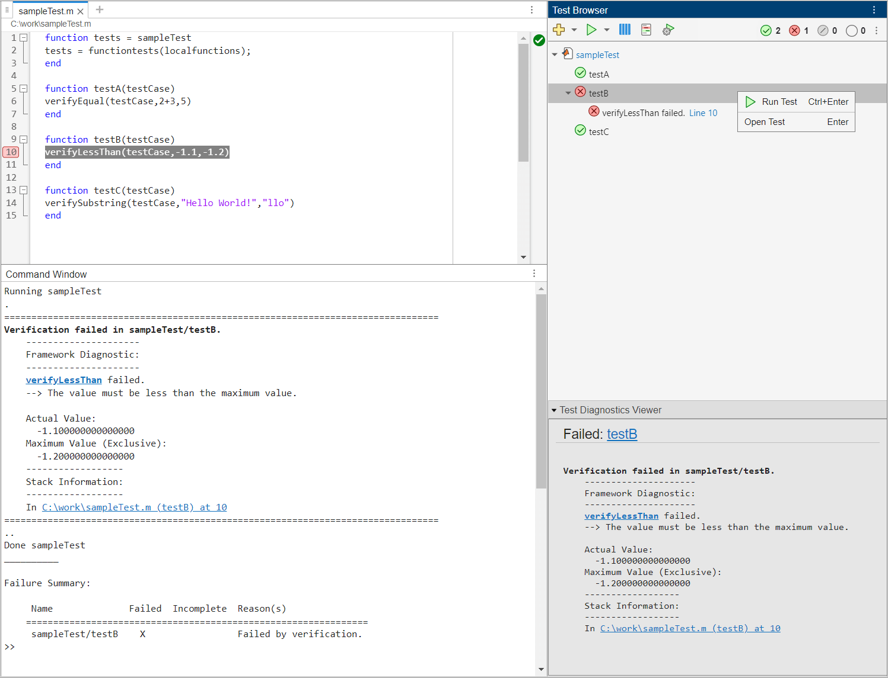
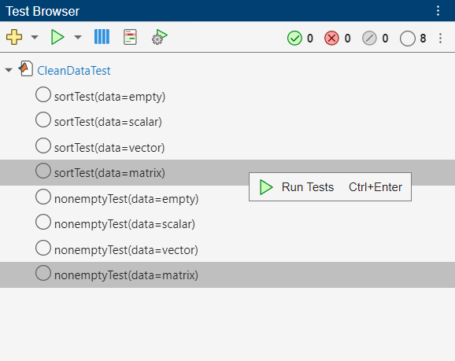
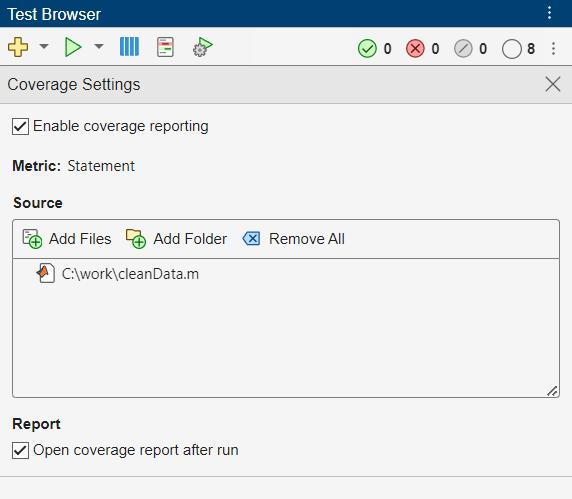

Test Browser
Open the Test Browser App
MATLAB Toolstrip: On the Apps tab, under MATLAB, click the app icon.
MATLAB command prompt: Enter
testBrowser.
You can also open the test browser if you run tests using either of these options. These options do not support script-based tests:
Right-click a test file in the Files panel and then select Run Tests.
Open a test file in the MATLAB Editor or Live Editor and then run the tests using the Run Tests section of the Editor or Live Editor tab on the toolstrip.
Examples
Debug a test failure by using the test browser.
Create a function-based test file named sampleTest.m in your
current folder. The file contains two tests that pass and one test that intentionally
fails.
function tests = sampleTest tests = functiontests(localfunctions); end function testA(testCase) verifyEqual(testCase,2+3,5) end function testB(testCase) verifyLessThan(testCase,-1.1,-1.2) end function testC(testCase) verifySubstring(testCase,"Hello World!","llo") end
Open the test browser.
testBrowser
Add the tests in the sampleTest.m file to the test browser. To
add the tests, click the Add tests button
on the toolbar and then select the test file. The test
browser creates a test suite and displays the test names in a test tree.
Run the tests by clicking the Run current suite button
on the toolbar. Two tests pass and one test fails due
to a verification failure. If you click the node of testB in the test
tree, the Test Diagnostics Viewer section at the bottom of the
Test Browser panel displays the diagnostic information.

Click the line-number link provided for testB in the test tree or
the hyperlinked path in the Test Diagnostics Viewer section to view
the code that resulted in the failure. To debug the test failure, set a breakpoint on
the highlighted line of code by clicking its line number. Then, run
testB by right-clicking its node in the test tree and selecting
Run Test. MATLAB enters debug mode and enables debugging capabilities that you can use to
investigate the cause of the test failure.

If you rerun the failed test in the Command Window with an appropriate actual value, the test passes.
Running sampleTest 10 verifyLessThan(testCase,-1.1,-1.2) K>> verifyLessThan(testCase,-1.3,-1.2) K>>
Exit debug mode and clear the breakpoint. Update the actual value in the test file, and save the file. Run the tests again by clicking the Run current suite button . All the tests pass.
Run parameterized tests by using the test browser.
In a file named cleanData.m in your current folder, create the
cleanData function. The function accepts a numeric array and
returns a cleaned and sorted version of the array. It vectorizes the array, removes the
NaN, 0, and Inf entries, and
finally sorts the vector.
function y = cleanData(X) y = X(:); % Vectorize the array y = rmmissing(y); % Remove NaN entries % Remove 0 and Inf entries idx = (y == 0 | y == Inf); y = y(~idx); % If the vector is empty, set it to eps if isempty(y) y = eps; end y = sort(y); % Sort the vector end
To test the cleanData function, create the parameterized
CleanDataTest test class in a file named
CleanDataTest.m in your current folder.
classdef CleanDataTest < matlab.unittest.TestCase properties (TestParameter) data = struct("empty",[],"scalar",0, ... "vector",[13 NaN 0],"matrix",[NaN 2 0; 1 Inf 3]); end methods (Test) function sortTest(testCase,data) actual = cleanData(data); testCase.verifyTrue(issorted(actual)) end function nonemptyTest(testCase,data) actual = cleanData(data); testCase.verifyNotEmpty(actual) end end end
Open the test browser.
testBrowser
Add the tests in CleanDataTest to the test browser. To add the tests,
click the Add tests button
on the toolbar and then select the
CleanDataTest.m file. The test browser creates a test suite and
displays the test names in a test tree. Each name includes information about
parameterization.
Run the tests that use the "matrix" parameter name. To run the
tests, first select the two tests by pressing the Ctrl key while making
selections with the mouse. Then, right-click one of the selected nodes and select
Run Tests. In this example, both the tests pass.

To run the remaining tests, click the Not Run button on the toolbar. Then, click the Run current suite button . After running the tests, view the test results by clicking the Passed button on the toolbar. The statuses of tests that ran before the most recent test run appear dimmed in the Test Browser panel. (since R2025a)

You can customize a test run by selecting options in the Test Browser toolbar. Select an option to run your tests in parallel (requires Parallel Computing Toolbox).
In a file named TestRand.m in your current folder, create the
parameterized TestRand class. The class results in 175 tests.
classdef TestRand < matlab.unittest.TestCase properties (TestParameter) dim1 = createDimensionSizes; dim2 = createDimensionSizes; dim3 = createDimensionSizes; type = {'single','double'}; end methods (Test) function testRepeatable(testCase,dim1,dim2,dim3) state = rng; firstRun = rand(dim1,dim2,dim3); rng(state) secondRun = rand(dim1,dim2,dim3); testCase.verifyEqual(firstRun,secondRun) end function testClass(testCase,dim1,dim2,type) testCase.verifyClass(rand(dim1,dim2,type),type) end end end function sizes = createDimensionSizes % Create logarithmically spaced sizes up to 100 sizes = num2cell(round(logspace(0,2,5))); end
Open the test browser.
testBrowser
Add the tests in the TestRand class to the test browser. To add the
tests, click the Add tests button
on the toolbar and then select the
TestRand.m file. The test browser creates a test suite and displays
the test names in a test tree.
To run the tests in parallel, first click the Enable parallel test execution button on the toolbar. Then, click the Run current suite button . The test browser divides the test suite into groups and runs the groups on the available workers. You can see information about the groups in the Command Window. The test browser might vary the order and number of groups or which tests it includes in each group.
Split tests into 18 groups and running them on 6 workers. ---------------- Finished Group 1 ---------------- Running TestRand .......... .. Done TestRand __________ ---------------- Finished Group 3 ---------------- Running TestRand .......... . Done TestRand __________ ---------------- Finished Group 2 ---------------- Running TestRand .......... .. Done TestRand __________ ---------------- Finished Group 5 ---------------- Running TestRand .......... . Done TestRand __________ ---------------- Finished Group 4 ---------------- Running TestRand .......... . Done TestRand __________ ---------------- Finished Group 6 ---------------- Running TestRand .......... . Done TestRand __________ ---------------- Finished Group 7 ---------------- Running TestRand .......... Done TestRand __________ ---------------- Finished Group 9 ---------------- Running TestRand .......... Done TestRand __________ ---------------- Finished Group 8 ---------------- Running TestRand .......... Done TestRand __________ ----------------- Finished Group 11 ----------------- Running TestRand ......... Done TestRand __________ ----------------- Finished Group 10 ----------------- Running TestRand .......... Done TestRand __________ ----------------- Finished Group 12 ----------------- Running TestRand ......... Done TestRand __________ ----------------- Finished Group 13 ----------------- Running TestRand ......... Done TestRand __________ ----------------- Finished Group 15 ----------------- Running TestRand ........ Done TestRand __________ ----------------- Finished Group 14 ----------------- Running TestRand ......... Done TestRand __________ ----------------- Finished Group 16 ----------------- Running TestRand ........ Done TestRand __________ ----------------- Finished Group 17 ----------------- Running TestRand ........ Done TestRand __________ ----------------- Finished Group 18 ----------------- Running TestRand ....... Done TestRand __________
Collect code coverage information and generate an HTML code coverage report for your source code when you run tests using the test browser.
In a file named cleanData.m in your current folder, create the
cleanData function. The function accepts a numeric array and
returns a cleaned and sorted version of the array. It vectorizes the array, removes the
NaN, 0, and Inf entries, and
finally sorts the vector.
function y = cleanData(X) y = X(:); % Vectorize the array y = rmmissing(y); % Remove NaN entries % Remove 0 and Inf entries idx = (y == 0 | y == Inf); y = y(~idx); % If the vector is empty, set it to eps if isempty(y) y = eps; end y = sort(y); % Sort the vector end
To test the cleanData function, create the parameterized
CleanDataTest test class in a file named
CleanDataTest.m in your current folder.
classdef CleanDataTest < matlab.unittest.TestCase properties (TestParameter) data = struct("empty",[],"scalar",0, ... "vector",[13 NaN 0],"matrix",[NaN 2 0; 1 Inf 3]); end methods (Test) function sortTest(testCase,data) actual = cleanData(data); testCase.verifyTrue(issorted(actual)) end function nonemptyTest(testCase,data) actual = cleanData(data); testCase.verifyNotEmpty(actual) end end end
Open the test browser.
testBrowser
Add the tests in CleanDataTest to the test browser. To add the tests,
click the Add tests button
on the toolbar, and then select the
CleanDataTest.m file. The test browser creates a test suite and
displays the test names in a test tree.
To generate a code coverage report for your source code in
cleanData.m:
Click the Open coverage settings button on the toolbar, and then select Enable coverage reporting.
In the Coverage Settings section, under Source, click the Add Files button and select the
cleanData.mfile.In the Coverage Settings section, under Report, select Open coverage report after run if the check box is clear.

Run the tests by clicking the Run current suite button on the toolbar. The test browser runs the tests, generates an HTML code coverage report, and opens it after the test run. In this example, all the tests pass and the source code receives full function and statement coverage.